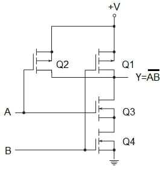
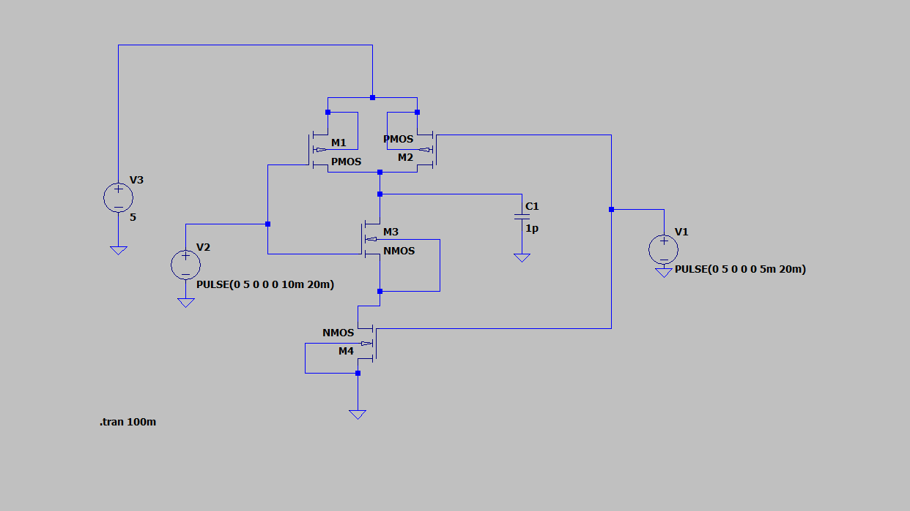
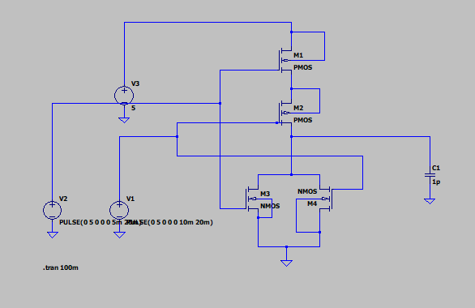
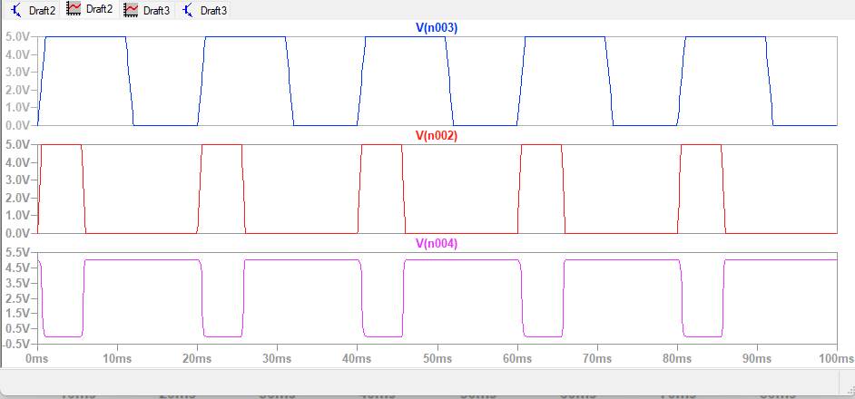
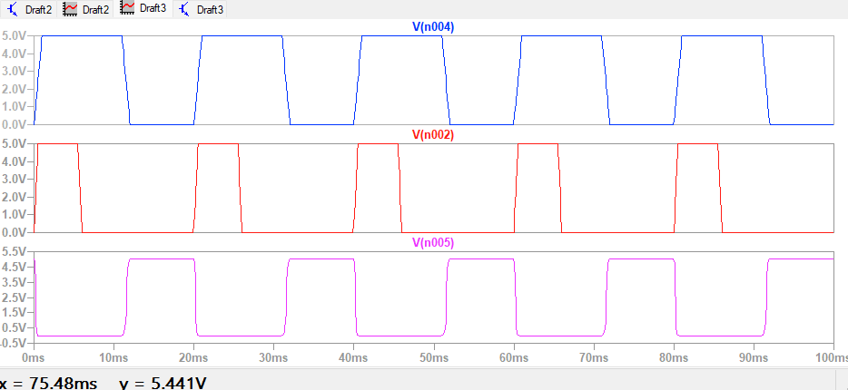

Name: Batch: B-3
Roll No: Date:28/7/26
EXPERIMENT NO. 03
To Simulate and Analyze Schematics Of 2-Input NAND Gate Using LT Spice.
OBJECTIVE: To simulate the schematic of the CMOS based NAND gate
SOFTWARE: LT Spice
THEORY:
NAND denotes NOT –AND
Table 1 shows the truth table for a NAND circuit
| A | B | Y |
|---|---|---|
| 0 | 0 | 1 |
| 0 | 1 | 1 |
| 1 | 0 | 1 |
| 1 | 1 | 0 |
Table 1. The truth table for a two-input NAND circuit
Figure 1 shows a CMOS two-input NAND gate. P-channel transistors Q1 and Q2 are connected in parallel between +V and the output terminal. N-channel transistors Q3 and Q4 are connected in series between the output terminal and ground.

Figure 1: A CMOS two-input NAND gate
With Q3 and Q4 transistors” on” and Q1 and Q2 transistors “off,” the output is a logic 0. This condition happens when both inputs, A and B, are logic 1, confirming the lowest row in the above truth table. With logic 0 in inputs A and B, Q3 and Q4 transistors are “off,” and Q1 and Q2 transistors are “on,” producing a logic 1 output. This is consistent with the first row of the truth table. When one of the inputs is a logic “1” and the other one is a logic “0”, either Q3 is “off” and Q2 is “on” or Q4 is “off” and Q1 is “on.” The output in both cases is a logic “1,” validating the second and the third rows of the truth table.
PROCEDURE:
Open LT Spice
In Files Menu---click on new schematics
Go to Components---Select each required component----do connections.
Simulate edit command: add required voltage level
Simulate the schematic --- in Tools menu ----go to Simulation
LT Spice window gets opened. There Right click on the black window---click on add trace.
CIRCUIT:

CMOS 2-Input NAND Gate Circuit Schematic

CMOS 2-Input NOR Gate Circuit Schematic
OUTPUT:

Simulated Output Waveform of 2-Input NAND Gate

Simulated Output Waveform of 2-Input NOR Gate
CONCLUSION: